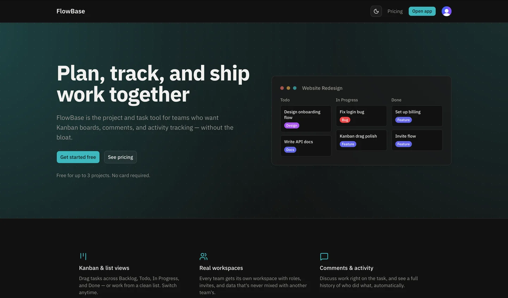
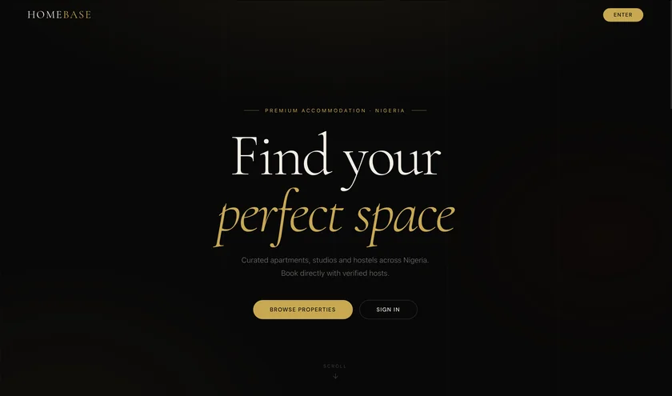
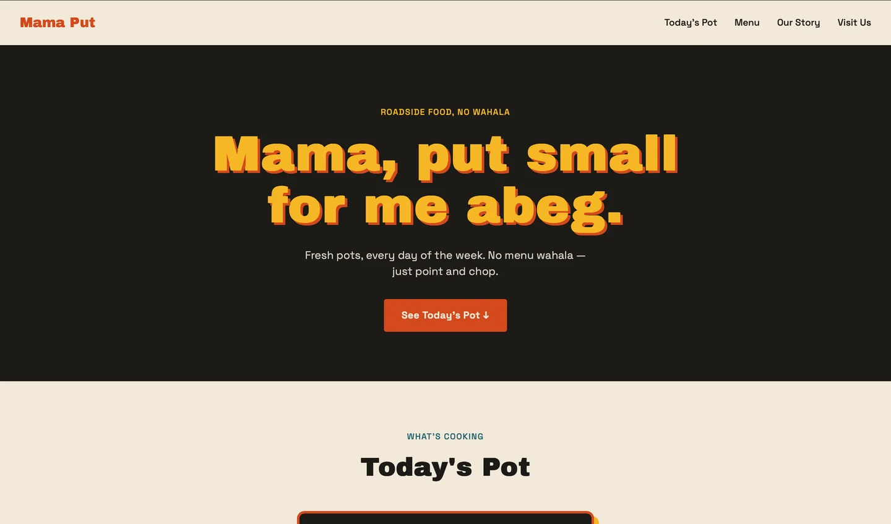
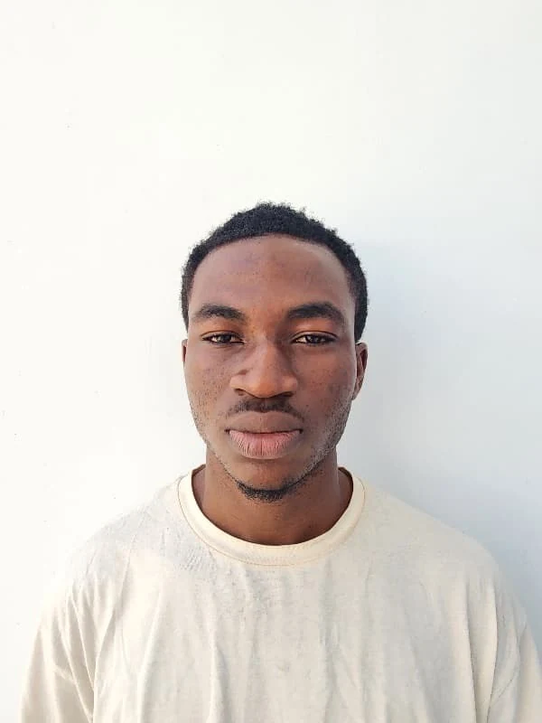

01 / FlowBaseSaaS / Productivity

FlowBase
View projectOne workspace for the whole team. A full-stack project management platform with Kanban boards, team roles, and subscription billing.
Independent software developer
Based in Nigeria · Building for the webI’m James. I turn ideas into websites and web apps that look good, feel right, and work hard.

01 / Selected work
Made with care. Built to be used.
A few projects from idea to implementation.
Different
challenges. The same attention to detail.

One workspace for the whole team. A full-stack project management platform with Kanban boards, team roles, and subscription billing.
Helping people find their next place. An accommodation platform for Nigeria, connecting hosts and renters through listings, bookings, and real-time messaging.

A little Lagos energy on the web. A buka-inspired restaurant concept with expressive typography, local character, and a menu that changes with the day.
Where the building started. A small JavaScript exercise in counting passengers, saving entries, and learning to connect an interface to its logic.

The person behind the pixels02 / A bit about me
I’m Makinde James, a software developer who cares about how things work and how they feel.
I studied Software Engineering at Osun State University. Since then, I’ve been turning that foundation into real projects: from a restaurant website with a distinctly Nigerian voice to full-stack platforms with authentication, payments, and live collaboration.
I enjoy the whole process. Understanding the problem. Finding the right structure. Getting the little interactions right. Then making it all work together.
03 / How I work
From a rough idea to something real
Good development is more than writing code.
Here’s what I bring
to the process.
Get clear on who it’s for and what it needs to do. The right questions make the rest of the work better.
Clear layouts, thoughtful details, and interfaces that work on a phone just as well as a larger screen.
Choose the tools that fit. Connect the pieces, test the important flows, and keep the code understandable.
Open to projects & opportunities
04 / Your idea goes hereLet’s make something worth putting out there.
makindejames5@gmail.com